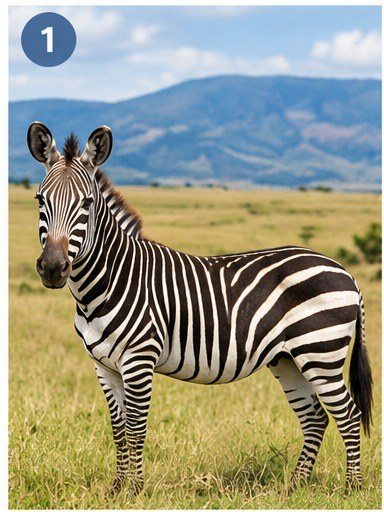
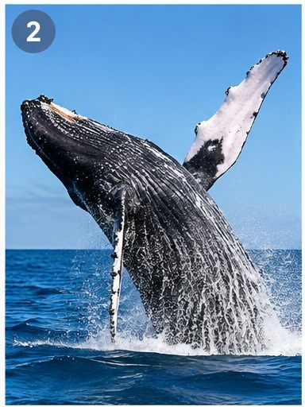
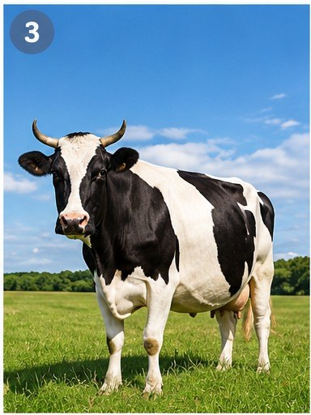
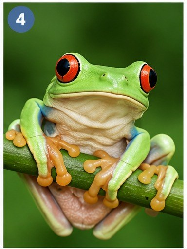
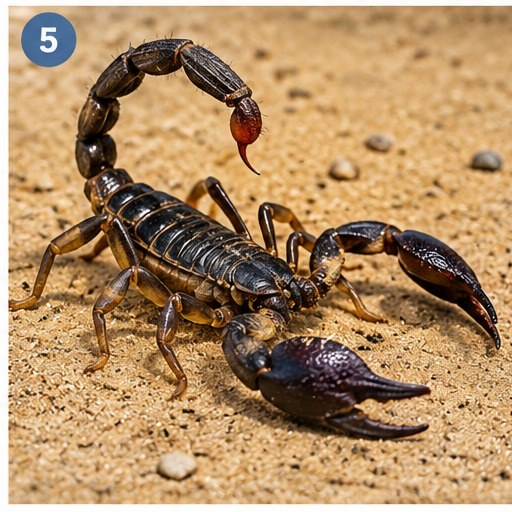
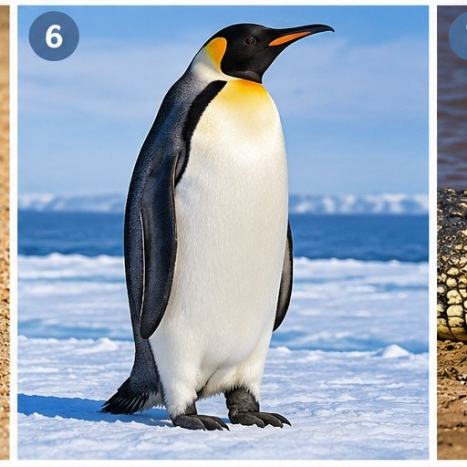
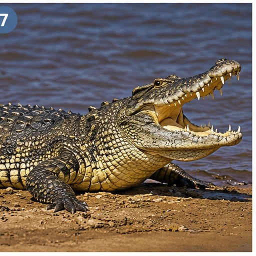
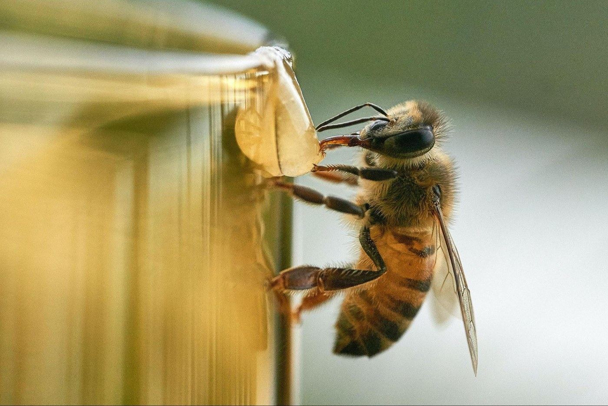

Vocabulary — Animal world
Today's theme is animals — how they live, move and survive. These words appear across all of today's readings. Choose the correct meaning for each one.
Now use eight of these words to complete the sentences below. No word bank this time — think back to the meanings above.
1. Blue whales can migrate over distances, sometimes travelling thousands of kilometres between feeding and breeding areas.
2. Zebras have a black-and-white pattern that helps confuse predators when the herd runs.
3. Researchers compare new whale-tail photographs against an international archive of earlier sightings.
4. After swimming for weeks, the whale finally reached its near Madagascar.
5. A change in migration patterns can that a species is starting to recover from near-extinction.
6. Some whale populations are slowly beginning to after decades of hunting nearly wiped them out.
7. Without stronger protection, several species of bee-eater could eventually face .
8. Worker bees across a wide area, searching for flowers rich in nectar and pollen.
Animal world — match the photos
Match each photo to the animal it shows. Choose your answer below the photo, then click the card to reveal the answer — it locks in once you flip it.

A striped African mammal that lives in large herds on open grassland.

A huge marine mammal, some species of which migrate thousands of kilometres every year.

A farm animal kept mainly for milk and meat, usually raised on pasture.

A small, brightly coloured amphibian that lives among leaves in warm, wet forests.

A small, eight-legged creature with a poisonous sting, common in hot, dry places.

A flightless seabird that lives in large colonies in very cold parts of the world.

A large reptile that lives in and around rivers, lakes and swamps in warm climates.
Mini writing — where does each animal live?
For each animal, write one full sentence about the kind of place it lives in. Use the useful vocabulary below to help you.
Sentence frame: "The [animal] lives in/on the ___." · "It is found in/near ___."
Example: The zebra lives on open grassland in East Africa.
1. Zebra — where might it live?
2. Whale — where might it live?
3. Cow — where might it live?
4. Tree frog — where might it live?
5. Scorpion — where might it live?
6. Penguin — where might it live?
7. Crocodile — where might it live?
Reading — Life in the hive
A short article about how honeybees live and work together. Read it carefully, then answer the questions below.

Life in the Hive: How Honeybees Live and Work Together
A single honeybee colony can hold as many as 60,000 bees, yet it functions like one large, highly organised society. At the centre of the hive is the queen, the only bee that lays eggs — she can lay up to 2,000 eggs a day during the busiest months of spring and summer. Almost every other bee in the colony is a worker, and every worker is female. Workers do not lay eggs; instead, they take on a different job depending on their age. Young workers clean the hive and feed the developing larvae, while older workers become foragers, flying out to search for nectar and pollen. A small number of male bees, called drones, have only one purpose: to mate with a new queen from another colony.
Foraging bees have a remarkable way of sharing information. When a worker finds a good source of nectar, she returns to the hive and performs a "waggle dance," moving in a figure-of-eight pattern. The angle and length of the dance tell the other bees exactly which direction to fly and how far away the flowers are. As bees move from flower to flower collecting nectar, grains of pollen stick to their bodies and are carried to the next flower, pollinating it — a process that is essential for many of the fruits, vegetables and nuts that humans eat.
In winter, when flowers disappear and temperatures fall, the bees do not hibernate. Instead, they cluster tightly around the queen, vibrating their flight muscles to generate heat and keep the whole colony warm until spring returns.
Useful chunks from this text:
- "form a colony"
- "take on a different job"
- "search for nectar and pollen"
- "share information"
- "play a vital / essential role in"
- "cluster together to keep warm"
Comprehension
1. How many eggs can the queen lay per day at the busiest time of year?
2. What determines a worker bee's job in the colony?
3. What is the purpose of the "waggle dance"?
4. According to the article, why is pollination important?
5. What do bees do in winter, according to the article?
Written summary (3–4 sentences)
Summarise how a honeybee colony is organised and how the bees communicate with each other.
Speaking summary
Useful phrases:
- "This article is about…"
- "According to the text, the queen…"
- "The worker bees are responsible for…"
- "One interesting detail is…"
- "Overall, the article shows that…"
Reading 1 — The Life of the European Bee-eater
First, match these words to their meanings — they all appear in the passage below. Then read the passage and complete the sentences that follow.
Match each word to its definition.
Now read the real IELTS-style reading window below and complete questions 1–8.
Useful chunks from this text:
- "get rid of something"
- "make [something] harmless"
- "follow tractors"
- "cross the desert"
- "at least 30 percent"
- "make it back to"
- "dig a tunnel"
- "continue the family line"
Reading 2 — Humpback Whale Breaks Migration Record
Before you read, decide whether these statements are true or false. Just guess — you'll find out how you did before the passage starts.
Humpback Whale Breaks Migration Record
A whale surprises researchers with her journey.
A lone humpback whale has travelled more than 9,800 kilometres from her breeding area in Brazil to another in Madagascar, setting a record for the longest migration ever documented by any mammal.
Humpback whales (Megaptera novaeangliae) are already known for having some of the longest migration distances of any mammal, and this huge journey is about 400 kilometres farther than the previous humpback record. The discovery was made by Peter Stevick, a biologist at the College of the Atlantic in Bar Harbor, Maine.
The whale's journey was unusual not only for its length but also because it crossed almost 90 degrees of longitude, travelling from west to east. Typically, humpbacks move in a north–south direction, between cold feeding areas and warm breeding grounds — and the longest journeys recorded until now have been between a single breeding site and a single feeding site.
The whale, a female, was first spotted off the coast of Brazil, where researchers photographed her tail fluke and took skin samples to determine her sex. Two years later, a tourist on a whale-watching boat photographed a humpback near Madagascar. To match the two sightings, Stevick's team used an extensive international catalogue of photographs of the undersides of whales' tails, which have markings as distinctive as a fingerprint; researchers routinely compare new photographs against this archive.
Scientists then estimated the whale's shortest possible route: an arc skirting the southern tip of South Africa and heading north-east towards Madagascar — a minimum distance of 9,800 kilometres. But Stevick says this is likely to be an underestimate, since the whale probably took a detour to feed on krill in the Southern Ocean near Antarctica before continuing to her destination.
Most humpback research is focused on the Northern Hemisphere, because the Southern Ocean near Antarctica is a hostile environment that is difficult to reach. But oceans in the Southern Hemisphere are wider and easier to travel across, says Rochelle Constantine, who studies humpback whales at the University of Auckland — so researchers will probably observe more long-distance migrations in the Southern Hemisphere as satellite tracking becomes more common.
Daniel Palacios, an oceanographer at the University of Hawaii, says the record-breaking journey could show that migration patterns are shifting as whale populations recover from near-extinction. But why the whale did not follow the usual migration routes remains a mystery: she may have been exploring new habitats, or she may simply have lost her way. "We generally think of humpback whales as very well studied," Palacios says, "but then they surprise us with things like this. There is clearly a lot we still don't know about whale migration."
Useful chunks from this text:
- "set a record for"
- "break a record"
- "take a detour"
- "recover from near-extinction"
- "lose her way"
- "a hostile environment"
- "easier to reach / to travel across"
- "the shortest possible route"
Comprehension — pick from a list. Each question below has TWO correct answers.
1. What TWO aspects of the whale's journey surprised researchers?
2. The passage mentions reasons why whales generally migrate. What TWO reasons are given?
3. What TWO methods did researchers use to record the identity of the whale near Brazil?
4. The passage mentions places the whale may have passed close to. Which TWO places may the whale have passed?
5. The passage says that more research is done in the Northern Hemisphere. Which TWO reasons are given for this?
6. The passage suggests why the whale made a different journey from usual. Which TWO reasons does it suggest?
7. Which TWO methods of finding out where whales migrate are mentioned in the passage?
In 1–2 sentences, what surprised you most about this whale's journey?
Day 15 complete! 🎉
All 5 tasks done — great work with today's animal readings. Come back tomorrow for the next day.